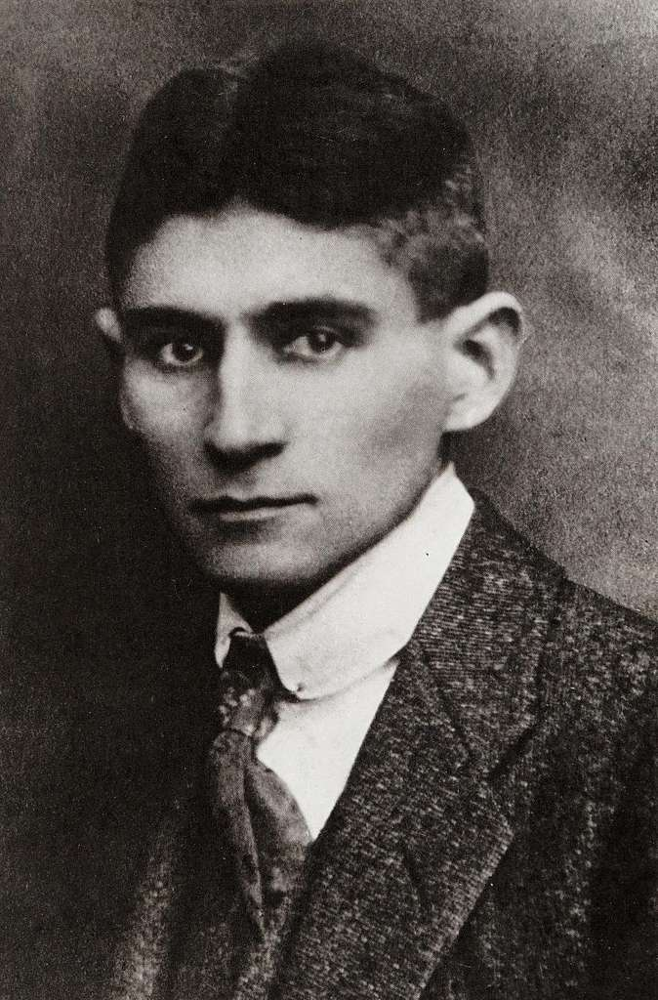

Franz Kafka

Major Novels (Posthumously Published)
The Trial (Der Process, written 1914–1915, published 1925)
The Castle (Das Schloss, written 1922, published 1926)
Amerika or The Man Who Disappeared (Der Verschollene, written 1911–1914, published 1927)
Notebooks, Diaries, and Letters
Letters to Felice (Briefe an Felice, published 1967)
Letters to Milena (Briefe an Milena, published 1952)
Letters to His Father (Brief an den Vater, written 1919, published posthumously)
The Diaries of Franz Kafka (Tagebücher, covering 1909–1923, published posthumously)
Blue Octavo Notebooks (written 1917–1919, published 1954)
Short Stories & Novellas
The Metamorphosis (Die Verwandlung, 1915)
The Judgment (Das Urteil, 1913)
In the Penal Colony (In der Strafkolonie, 1919)
The Stoker (Der Heizer, 1913 – part of Amerika)
A Country Doctor (Ein Landarzt, 1919 – short story collection)
A Hunger Artist (Ein Hungerkünstler, 1924 – short story collection)
The Great Wall of China (Beim Bau der Chinesischen Mauer, 1931 – stories written 1917–1923)
Meditation (Betrachtung, 1913) – Short Prose Collection
Other Notable Short Works
Before the Law (Vor dem Gesetz, 1915 – included in The Trial)
An Old Manuscript (Ein altes Blatt)
Blumfeld, an Elderly Bachelor (Blumfeld, ein älterer Junggeselle)
Investigations of a Dog (Forschungen eines Hundes)
The Village Schoolmaster (Der Dorfschullehrer)